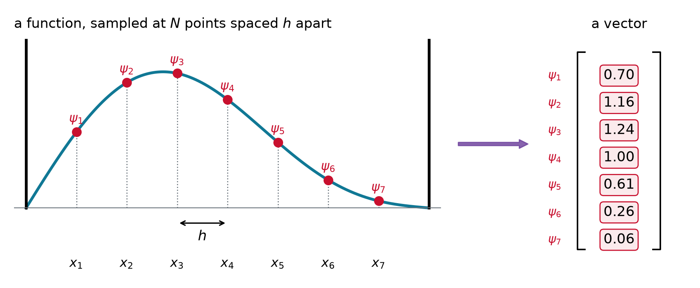
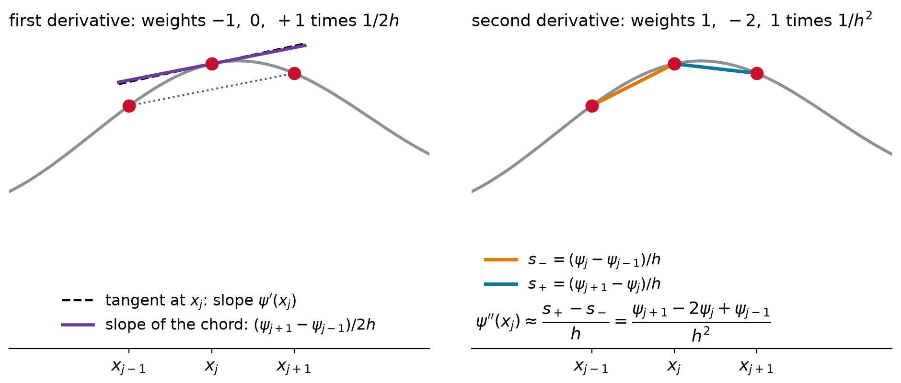
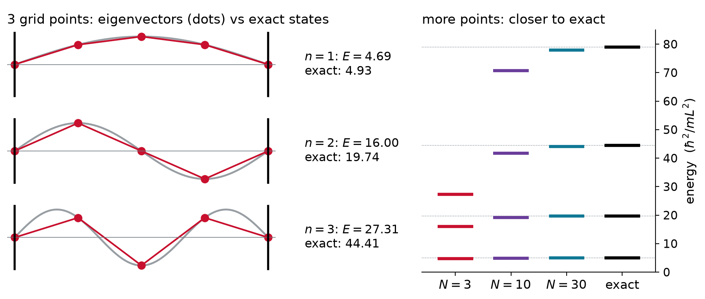
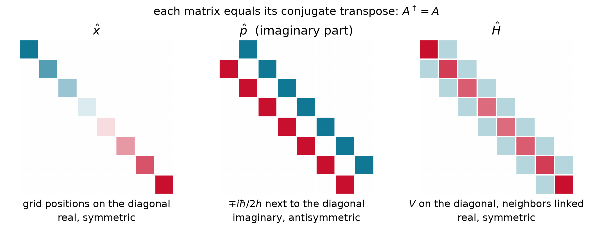
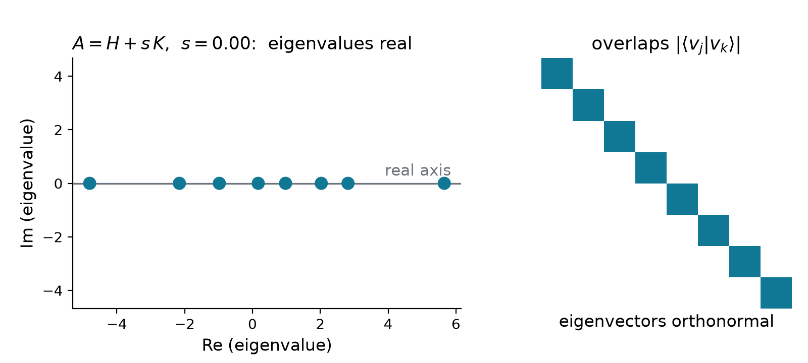
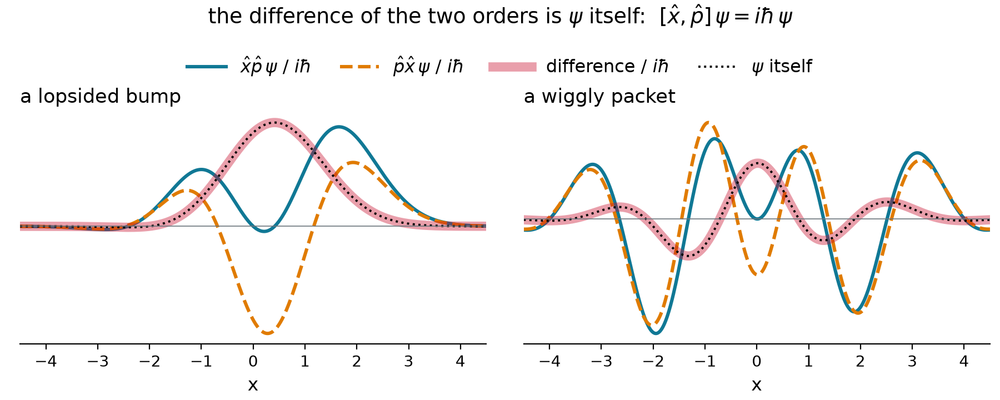

Chem 3240 · Lecture 3.5
| postulate | lecture | |
|---|---|---|
| 1 | the state is a wavefunction \psi; \lvert\psi\rvert^2 is the probability density | 3.1 |
| 2 | every observable is a linear Hermitian operator | today |
| 3 | a measurement returns an eigenvalue a_n and leaves the state \phi_n | 3.6 |
| 4 | outcome a_n has probability \lvert\langle\phi_n\vert\psi\rangle\rvert^2 | 3.6 |
| 5 | the state evolves by i\hbar\,\partial\Psi/\partial t = \hat{H}\Psi | 3.7 |
\hat{A}\,(c_1\psi_1 + c_2\psi_2) = c_1\,\hat{A}\psi_1 + c_2\,\hat{A}\psi_2

\hat{x}\,\psi \;\longrightarrow\; \begin{pmatrix} x_1 & 0 & 0 & 0 \\ 0 & x_2 & 0 & 0 \\ 0 & 0 & x_3 & 0 \\ 0 & 0 & 0 & x_4 \end{pmatrix} \begin{pmatrix} \psi_1 \\ \psi_2 \\ \psi_3 \\ \psi_4 \end{pmatrix} = \begin{pmatrix} x_1\psi_1 \\ x_2\psi_2 \\ x_3\psi_3 \\ x_4\psi_4 \end{pmatrix}

\psi'(x_j) \approx \frac{\psi_{j+1} - \psi_{j-1}}{2h} \qquad\qquad \psi''(x_j) \approx \frac{s_+ - s_-}{h} = \frac{\psi_{j+1} - 2\psi_j + \psi_{j-1}}{h^2}
\frac{d}{dx} \to \frac{1}{2h}\begin{pmatrix} 0 & 1 & 0 & 0 \\ -1 & 0 & 1 & 0 \\ 0 & -1 & 0 & 1 \\ 0 & 0 & -1 & 0 \end{pmatrix} \qquad\qquad \frac{d^2}{dx^2} \to \frac{1}{h^2}\begin{pmatrix} -2 & 1 & 0 & 0 \\ 1 & -2 & 1 & 0 \\ 0 & 1 & -2 & 1 \\ 0 & 0 & 1 & -2 \end{pmatrix}
Apply the centered difference to the samples of a plane wave, \psi_j = e^{ikx_j}.
\frac{\psi_{j+1} - \psi_{j-1}}{2h} = \frac{e^{ikh} - e^{-ikh}}{2h}\,e^{ikx_j} = \frac{i\sin kh}{h}\,\psi_j \;\;\xrightarrow{\;kh\,\ll\,1\;}\;\; ik\,\psi_j
An eigenvector of the matrix, as e^{ikx} is an eigenfunction of d/dx. Momentum: \hbar\sin(kh)/h \approx \hbar k.
H = -\frac{\hbar^2}{2m}D_2 + V = \begin{pmatrix} 2t + V_1 & -t & 0 & 0 \\ -t & 2t + V_2 & -t & 0 \\ 0 & -t & 2t + V_3 & -t \\ 0 & 0 & -t & 2t + V_4 \end{pmatrix}, \qquad t = \frac{\hbar^2}{2mh^2}
\hat{H}\psi = E\,\psi \quad\longrightarrow\quad H\mathbf{v} = E\,\mathbf{v}
Three interior points (h = L/4, \psi = 0 at the walls). Find the energies and the ground state of \;H = t\begin{pmatrix} 2 & -1 & 0 \\ -1 & 2 & -1 \\ 0 & -1 & 2 \end{pmatrix}, \;t = \dfrac{8\hbar^2}{mL^2}.
\begin{aligned} &\det(H - \lambda t\,I) = t^3\,(2-\lambda)\big[(2-\lambda)^2 - 2\big] = 0 \\ &\lambda = 2-\sqrt{2},\ \ 2,\ \ 2+\sqrt{2} \\ &E_1 = (2-\sqrt{2})\,t = 4.69\ \hbar^2/mL^2 \qquad (\text{exact: } 4.93) \\ &\mathbf{v}_1 \propto \big(1,\ \sqrt{2},\ 1\big) \propto \big(\sin\tfrac{\pi}{4},\ \sin\tfrac{\pi}{2},\ \sin\tfrac{3\pi}{4}\big) \end{aligned}

eigh is the eigensolver for Hermitian matrices. Why Hermitian? Coming up| integral | Dirac | numpy | |
|---|---|---|---|
| inner product | \int\phi^*\psi\,dx | \langle\phi\vert\psi\rangle | np.vdot(phi, psi) * h |
| operator acts | \hat{A}\psi(x) | \hat{A}\lvert\psi\rangle | A @ psi |
| matrix element | \int\phi^*\hat{A}\psi\,dx | \langle\phi\vert\hat{A}\vert\psi\rangle | np.vdot(phi, A @ psi) * h |
| eigenproblem | \hat{A}\phi_n = a_n\phi_n | \hat{A}\lvert n\rangle = a_n\lvert n\rangle | a, phi = np.linalg.eigh(A) |
\langle \phi \vert \hat{A}\psi \rangle = \langle \hat{A}\phi \vert \psi \rangle \qquad\Longleftrightarrow\qquad A_{jk} = A_{kj}^*

A = \begin{pmatrix} 2 & 1-i \\ 1+i & 3 \end{pmatrix} \quad B = \begin{pmatrix} 1 & 2 \\ 3 & 4 \end{pmatrix} \quad C = \begin{pmatrix} i & 0 \\ 0 & 1 \end{pmatrix} \quad D = \begin{pmatrix} 0 & -i \\ i & 0 \end{pmatrix}

Show that \hat{p} = -i\hbar\,d/dx satisfies \langle \phi \vert \hat{p}\psi \rangle = \langle \hat{p}\phi \vert \psi \rangle.
Integrate by parts; the boundary term vanishes because \phi, \psi \to 0:
\int\phi^*\big(-i\hbar\,\psi'\big)\,dx = i\hbar\int\phi'^*\,\psi\,dx = \int\big(-i\hbar\,\phi'\big)^*\,\psi\,dx \quad\checkmark
Without the i: (d/dx)^\dagger = -d/dx, anti-Hermitian. The -i turns the sign around.
[\hat{A},\hat{B}] = \hat{A}\hat{B} - \hat{B}\hat{A} \qquad\qquad [\hat{x},\hat{p}] = i\hbar

Find [x, d/dx] by acting on an arbitrary function f.
x\,\frac{df}{dx} - \frac{d}{dx}\big(xf\big) = xf' - f - xf' = -f \qquad\Longrightarrow\qquad \left[x,\frac{d}{dx}\right] = -1
Multiply by -i\hbar: [\hat{x},\hat{p}] = i\hbar. The product rule leaves one term, for every f.
[\hat{A},\hat{B}] = 0 \quad\Longrightarrow\quad \hat{A}\phi_n = a_n\phi_n, \quad \hat{B}\phi_n = b_n\phi_n
Why: if \hat{A}\phi = a\phi, then \hat{A}(\hat{B}\phi) = \hat{B}(\hat{A}\phi) = a\,(\hat{B}\phi), so \hat{B}\phi = b\,\phi
Observables are linear Hermitian operators. On a grid they are matrices equal to their own conjugate transpose, with real eigenvalues and orthogonal eigenvectors, ready to be measured. Operators need not commute: [\hat{x},\hat{p}] = i\hbar is why position and momentum are never sharp together, while commuting operators share eigenfunctions and can be.
Chem 3240 · Quantum Mechanics